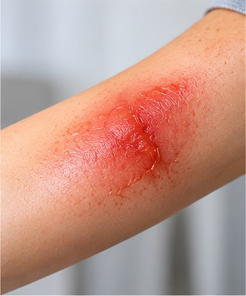
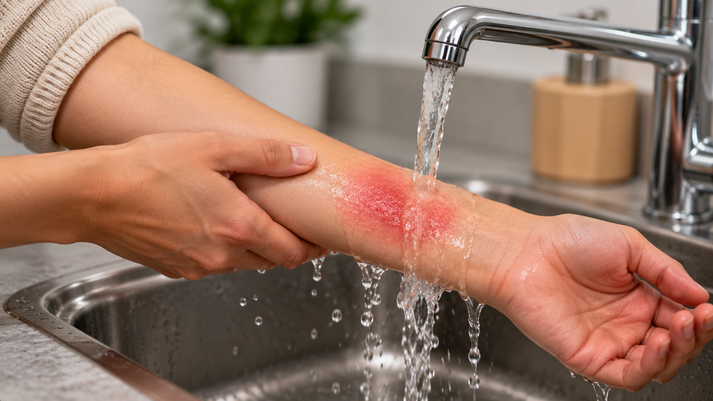
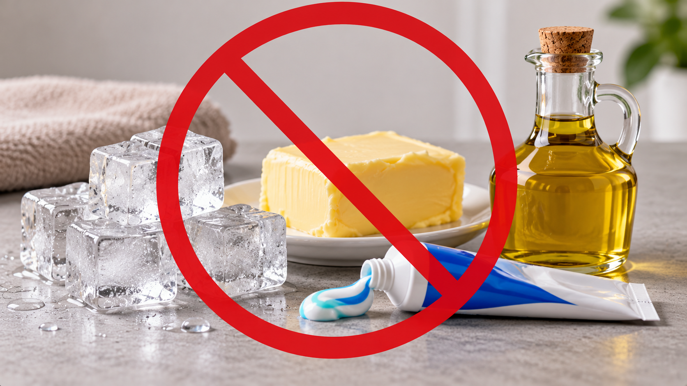

Burns & First Aid
Burns can happen when the skin comes into contact with heat, hot liquids, steam, or chemicals. Knowing what to do can help reduce further damage.

What Should You Do?
Follow these basic first aid steps for a thermal burn.
- Cool the burn: Hold the burned area under cool or lukewarm running water for 20 minutes.
- Remove jewellery: Carefully remove rings or watches near the burn before swelling begins, if they are not stuck.
- Protect the burn: After cooling, loosely cover the burn with a clean, non-stick dressing.
- Do not break blisters: Leave blisters intact to help protect the skin.
- Get medical help: Contact a healthcare professional if the burn is deep, large, or in a sensitive area.

What Should You Avoid?
- Do not put ice directly on a burn.
- Do not apply butter, toothpaste, or oil.
- Do not remove clothing stuck to the skin.
- Do not break burn blisters.
